Nachfolgende Beispiele basieren auf einer gängigen Praxis bei der Verwendung von persönlichen Absturzschutzsystemen.
Ein Auffangsystem:
Eine geeignete Anschlageinrichtung ist eine Anschlageinrichtung nach DIN EN 795.
Eine geeignete Körperhaltevorrichtung ist ein Auffanggurt nach DIN EN 361.
Ein geeigneter Bestandteil, um eine Auffangfunktion zu gewährleisten, ist:
Diese Bestandteile sind gebrauchsfertig und dürfen nicht mit zusätzlichen energieabsorbierenden Bestandteilen verwendet werden. Bei der Verwendung der Systeme ist unbedingt darauf zu achten, dass nur die vom Hersteller dafür vorgesehenen Bestandeile kombiniert werden. Eine Nichtbeachtung kann zu größeren Auffangstrecken, erhöhten Fangstoßkräften bzw. sogar zum Versagen der Ausrüstung führen.
Bei der Zusammenstellung eines Auffangsystems ist darauf zu achten, dass der energieabsorbierende Bestandteil (wie z. B. Falldämpfer) für die zu erwartende Beanspruchung (Nennlast) ausgelegt ist. Angaben zur minimalen und maximalen Nennlast sind in der Gebrauchsanleitung aufgeführt. In Zweifelsfällen ist der Hersteller zu Rate zu ziehen.
Im nachfolgenden Diagramm ist zu erkennen, dass bereits bei einer Fallhöhe von 50 cm mit einer Fangstoßkraft von 8 kN zu rechnen ist, wenn keine energieabsorbierenden Bestandteile im System zum Schutz gegen Absturz (z. B. Seil ohne Falldämpfer) verwendet werden.

Abb. 4 Verlauf der Fangstoßkräfte mit und ohne Falldämpfung
Dieses System besteht aus einem Auffanggurt, einer beweglichen Führung, einem an der beweglichen Führung angebrachten, mitlaufenden, selbsttätig blockierenden Auffanggerät und einem Verbindungselement oder einem Verbindungsmittel mit angefügtem Verbindungselement. Ein Falldämpfer ist in der beweglichen Führung oder dem Verbindungsmittel integriert bzw. eine falldämpfende Funktion durch das Zusammenwirken zwischen Auffanggerät und Führung sichergestellt.
Der Auffanggurt wird durch ein Verbindungselement oder ein Verbindungsmittel mit angefügtem Verbindungselement mit dem mitlaufenden Auffanggerät verbunden. Im Sturzfall arretiert das mitlaufende Auffanggerät an der beweglichen Führung und hält den Benutzer oder die Benutzerin.

Abb. 5 Skizze des Auffangsystems mit einem mitlaufenden
Auffanggerät einschließlich beweglicher Führung
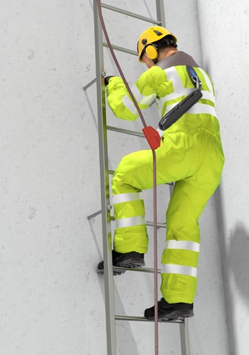
Abb. 6 Beispiel des Auffangsystems mit einem
mitlaufenden Auffanggerät einschließlich beweglicher Führung
Dieses System besteht aus einem mitlaufenden Auffanggerät, einem verbindenden Einzelteil, einem Auffanggurt und einer festen Führung. In dem mitlaufenden Auffanggerät und/oder in der festen Führung kann eine energieabsorbierende Funktion vorhanden sein.
Der Auffanggurt wird durch ein Verbindungsele- ment oder mit einem Verbindungsmittel mit angefügten Verbindungselement mit dem mitlaufenden Auffanggerät verbunden. Im Falle eines Sturzes arretiert das mitlaufende Auffanggerät an der festen Führung und hält die aufgefangene Person.
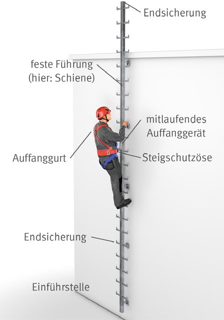
Abb. 7 Prinzipskizze des Auffangsystems mit einem
mitlaufenden Auffanggerät einschließlich fester Führung
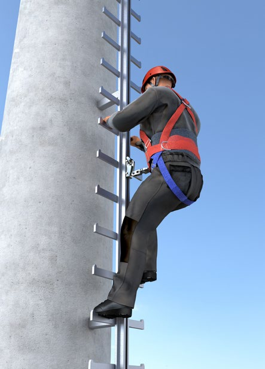
Abb. 8 Beispiel eines Auffangsystems mit einem
mitlaufenden Auffanggerät einschließlich fester Führung
Dieses System besteht aus einem Auffanggurt und einem Höhensicherungsgerät. Das Höhensicherungsgerät ist mit einer selbsttätigen Blockierfunktion und einer automatischen Spann- und Einziehvorrichtung für das Verbindungsmittel ausgestattet. Eine energieabsorbierende Funktion ist entweder in dem Gerätegehäuse selbst vorhanden oder wird durch einen integrierten Falldämpfer erreicht.
Der Auffanggurt ist mit einem Verbindungselement des ein- und ausziehbaren Verbindungsmittels des Höhensicherungsgerätes verbunden. Im Falle eines Sturzes blockiert das Höhensicherungsgerät mittels integrierter Bremsvorrichtung und hält die aufgefangene Person.
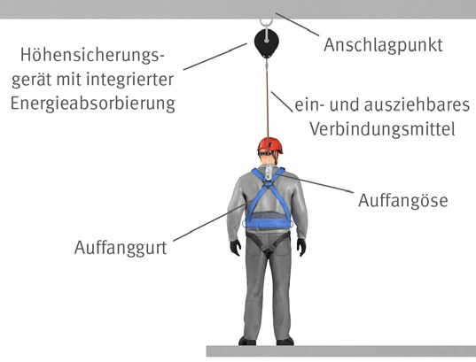
Abb. 9 Skizze des Auffangsystems mit Höhensicherungsgerät
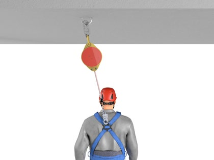
Abb. 10 Beispiel eines Auffangsystems mit Höhensicherungsgerät
Das System besteht aus einem Verbindungsmittel, einem Falldämpfer und einem Auffanggurt. Die energieabsorbierende Funktion erfolgt durch den Falldämpfer oder ist im Verbindungsmittel integriert.
Der Auffanggurt ist mit dem Verbindungselement des Verbindungsmittels bzw. des Falldämpfers verbunden. Der Falldämpfer kann direkt am Anschlagpunkt der Anschlageinrichtung/an der Auffangöse des Auffanggurtes angeordnet bzw. in dem Verbindungsmittel integriert sein.
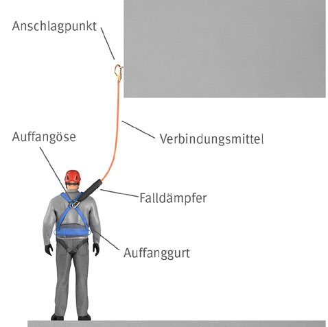
Abb. 11 Skizze des Auffangsystems mit Falldämpfer
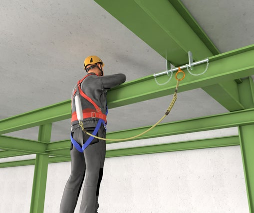
Abb. 12 Beispiel eines Auffangsystems mit
Falldämpfer und Anschlageinrichtung (Trägerklemme)
Hinweis: Die Länge des Verbindungsmittels (einschließlich Falldämpfer) darf zwischen der Auffangöse des Auffanggurtes und dem Anschlagpunkt je nach Hersteller und Ausführung max. 2 m betragen.
Das System besteht aus einer Anschlageinrichtung, einem Verbindungsmittel mit Längeneinstellvorrichtung und einem Haltegurt bzw. Auffanggurt. Bei einem Arbeitsplatzpositionierungssystem kommt der ergonomischen Gestaltung der Bestandteile eine besondere Bedeutung zu, da die Person unter Umständen über einen längeren Zeitraum in einer Position gehalten werden muss.
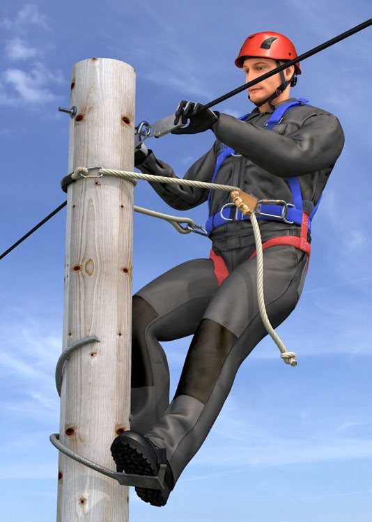
Abb. 13 Beispiel für die Benutzung eines Arbeitsplatzpositionierungssystems
an einem Holzmast (Auffanggurt mit Halteösen und Halteseil)
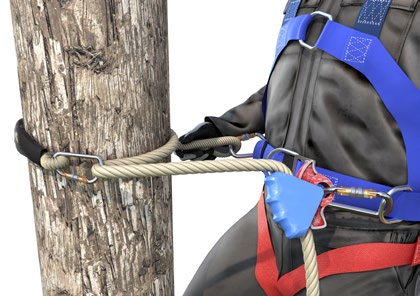
Abb. 14 Das Halteseil mit integriertem Bypass verhindert das Abrutschen
Aus ergonomischen Gründen und zum Schutz gegen Absturz beim Zugang zum Arbeitsplatz empfiehlt sich die Verwendung eines Auffanggurtes mit einem integrierten Haltegurt.
Abb. 15 Beispiel für die Benutzung eines Arbeitsplatzpositionierungssystems
an einem Stahlgittermast (Auffanggurt mit Halteösen und Halteseil) mit
zusätzlichem Auffangsystem als Schutz gegen Absturz während der Fortbewegung am Mast
Das System besteht aus einer Anschlageinrichtung, einem Verbindungsmittel und einem Haltegurt bzw. Auffanggurt. Ein Absturz wird verhindert, indem ein Verbindungsmittel verwendet wird, dessen Länge kürzer als der Abstand von der Anschlageinrichtung zur Absturzkante ist.
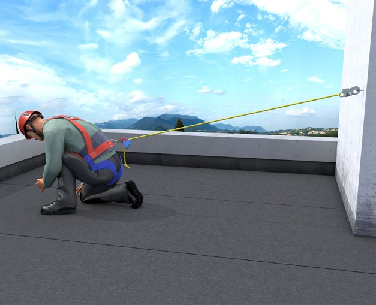
Abb. 16 Beispiel für ein Rückhaltesystem mit
einstellbarer Länge, befestigt an einem Einzelanschlagpunkt
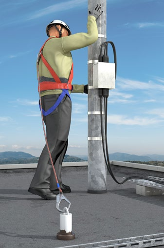
Abb. 17 Beispiel für ein Rückhaltesystem mit fester Länge
Abb. 18 Beispiel für ein Rückhaltesystem mit fester Länge,
befestigt an einer Anschlageinrichtung mit einem beweglichen Anschlagpunkt